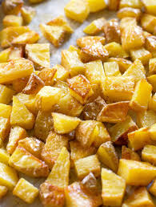

Roasted Potatoes
Ingredients
- Golden Potatoes
- 2 tbsp olive oil
- garlic powder (or garlic salt)
HOW TO:
- Preheat over to 425oF
- Peel potatoes (optional*)
- Chop potatoes into small squares
- Cover baking sheet in tin foil & coat with olive oil
- Put potatoes on baking sheet & toss with the oil
- Add garlic powder or garlic salt to taste
- Bake in oven until golden brown (about 15 minutes)
- Remove from oven & sprinkle with salt while still hot